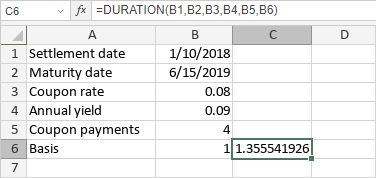

DURATION funkcija
DURATION funkcija je jedna od finansijskih funkcija. Koristi se za izračunavanje Makoliove trajnosti (Macaulay duration) hartije od vrednosti sa pretpostavljenom nominalnom vrednošću od $100.
Sintaksa
DURATION(settlement, maturity, coupon, yld, frequency, [basis])
DURATION funkcija ima sledeće argumente:
| Argument | Opis |
|---|---|
| settlement | Datum kada je hartija od vrednosti kupljena. |
| maturity | Datum dospeća hartije od vrednosti. |
| coupon | Godišnja kamatna stopa hartije od vrednosti. |
| yld | Godišnji prinos hartije od vrednosti. |
| frequency | Broj isplata kamata godišnje. Moguće vrednosti su: 1 za godišnje isplate, 2 za polugodišnje isplate, 4 za kvartalne isplate. |
| basis | Osnova za brojanje dana, numerička vrednost između 0 i 4. Opcioni argument. Moguće vrednosti su navedene u tabeli ispod. |
basis argument može biti jedna od sledećih vrednosti:
| Numerička vrednost | Osnova za brojanje dana |
|---|---|
| 0 | US (NASD) 30/360 |
| 1 | Stvarni broj dana / stvarni broj dana (Actual/actual) |
| 2 | Stvarni broj dana / 360 (Actual/360) |
| 3 | Stvarni broj dana / 365 (Actual/365) |
| 4 | Evropski 30/360 (European 30/360) |
Napomene
Datumi moraju biti uneseni pomoću DATE funkcije.
Kako primeniti DURATION funkciju.
Primeri
Slika ispod prikazuje rezultat koji vraća DURATION funkcija.
